1. CREACIÓN DEL REPOSITORIO GITHUB
Preparación e instalación
En primer lugar voy a crear el directorio local en kali linux, para la unidad 0, y voy a definir mis variables de acceso a la cuenta de github que crearé a continuación:
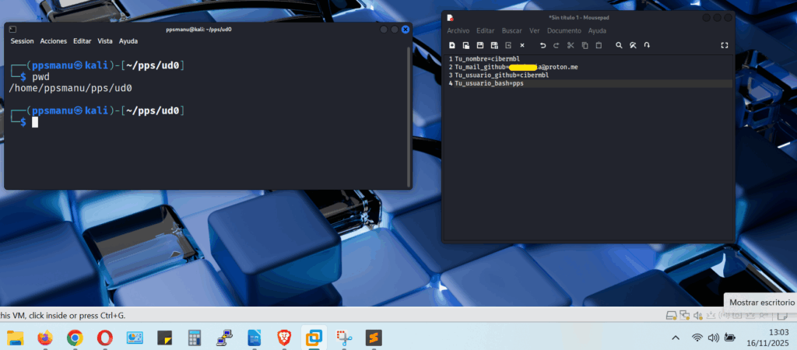
Copio y pego mis variables en el terminal:
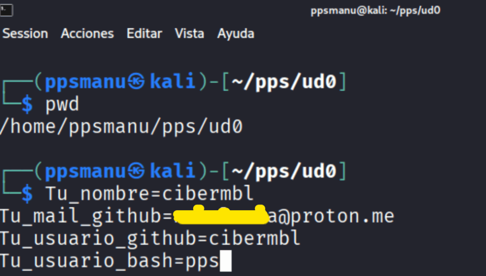
Creo otro directorio, llamado tarea_ud0, dentro

Consulto actualizaciones con → apt update y las ejetucto con apt upgrade:

A continuación instalo git:
sudo apt install git
sudo apt install git

Creación de cuenta en GitHub
Procedo a crearme la cuenta en github, en este enlace --> https://github.com/signup?source=login
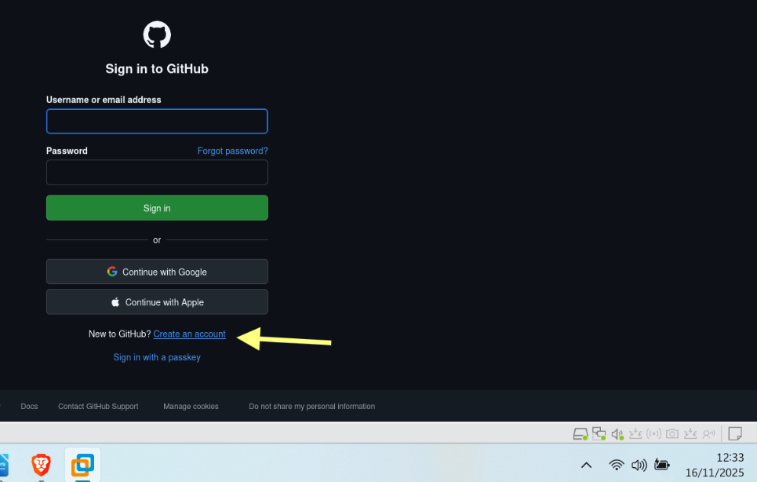
relleno los datos correspondientes,
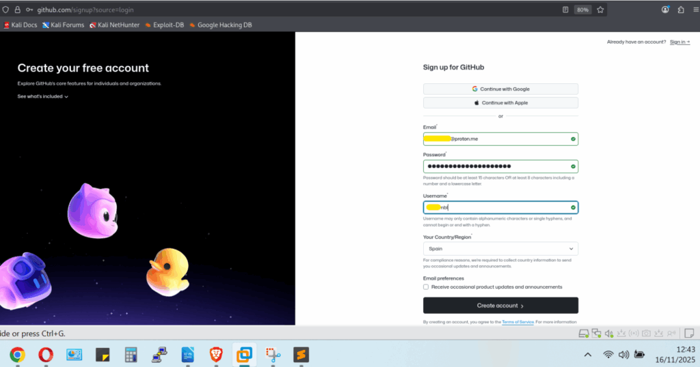
Recibiré un código al email, aportado, y ya rellenándolo tendré la cuenta creada.
Hago login en github,

Creación de vasriables globales de acceso a GitHub
A continuación voy a fijar las variables globales de acceso a github, en nuestro terminal de kali linux, para mayor comodidad, y asi las toma tal y como las definí al principio de esta tarea (la puedes ver el .txt de la izquierda que cree):
git config --global user.name $Tu_usuario_github
git config --global user.email $Tu_mail_github
git config --global init.defaultBranch main
git config --global core.editor nano
git config --global user.name $Tu_usuario_github
git config --global user.email $Tu_mail_github
git config --global init.defaultBranch main
git config --global core.editor nano

Para comprobar que toma bien las variables, hago la comprobación con el nombre de usuario de github, mediante el comando --> git config user.name
Y efectivamente, me lo devuelve correctamente en el terminal.
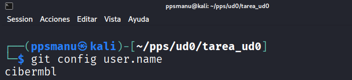
A continuación configuramos git config --global core.pager "" --> con eso conseguimos que ante comandos como git diff o git log , los resultados se muestren por completo y sin paginar en el terminal.

Creación llave ssh y adición en GitHub
A continuación voy a crear la llave ssh para nuestro equipo para añadirla en github, y así darle un plus de seguridad en las conexiones:
ssh-keygen -t ed25519 -C $Tu_mail_github
ssh-keygen -t ed25519 -C $Tu_mail_github
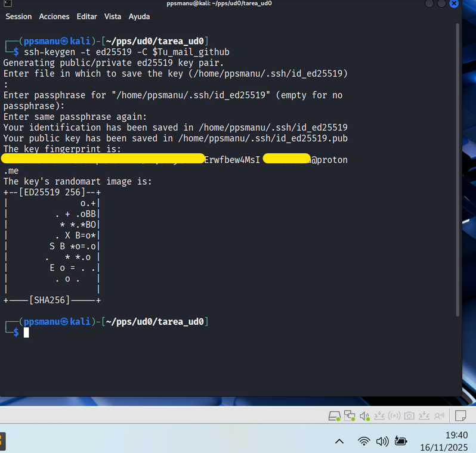

A continuación, procedo a copiar la clave ssh pública que he creado en github, y la borro en mi equipo,

y para copiarla en github, entro con la cuenta de github, y en mi perfil --> settings
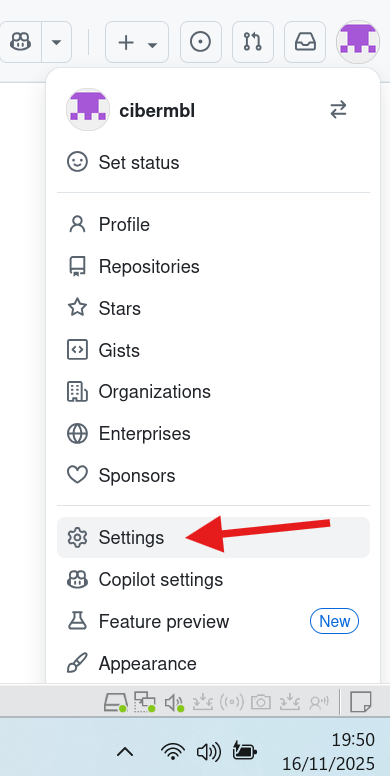
y en SSH and GPG keys

Añado la clave a través del botón verde New SSS key,
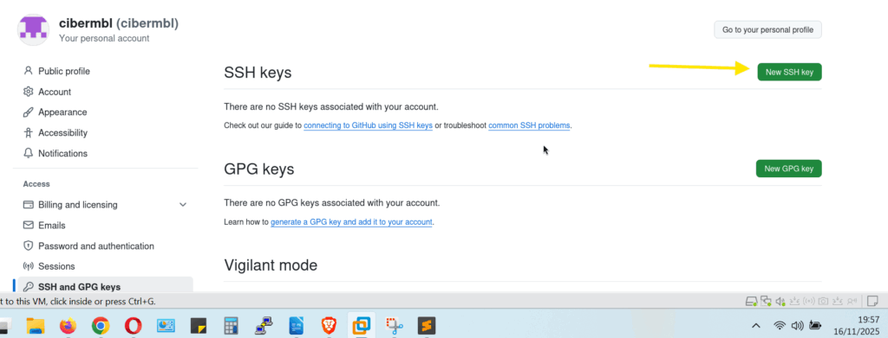
le escribo un título, y añado:


Adición de la llave ssh en el repositorio en GitHub
A continuación procedo a crear un repositorio en github,
haciendo clic en el avatar del perfil (arriba a la derecha con la flecha amarilla) y Repositories,
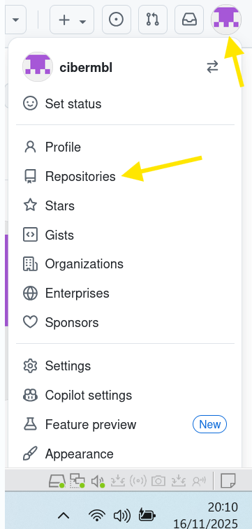
New,
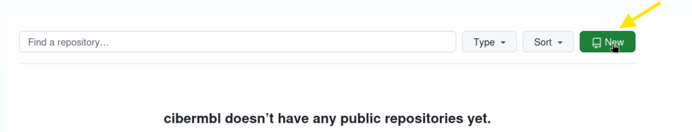
Le doy nombre al repositorio, una descripción, y la opción de Add README activada:

y a continuación copio el código de acceso en ssh,

y hago un git clone con ese código ssh del repositorio, tal que asi:
git clone git@github.com:cibermbl/PPS-Unidad0-Tarea-Manuel-Benitez.git
git clone git@github.com:cibermbl/PPS-Unidad0-Tarea-Manuel-Benitez.git
Observamos, que nos da una primera advertencia sobre la conexión al repositorio por ssh, y a la pregunta de si estoy seguro de que quiero conectarme escribo Yes,

y observamos como ha creado el nuevo directorio --> PPS-Unidad0-Tarea-Manuel-Benitez,
navego dentro de él, y listo lo que contiene con -> ls -la
Observamos, como contiene el README.md, el directorio .git, etc.

Instalación de GitHub CLI
A continuación, procedo a crear la estructura del repositorio. Que debe ser como éste:
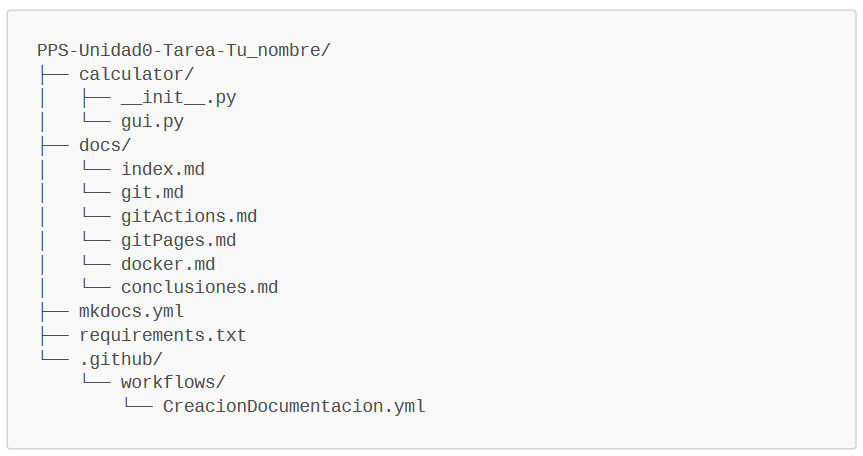
Para ello, en primer lugar procedo a instalar la herramienta GitHub CLI, la cual nos permite interactuar directamente desde la linea de comandos con GitHub, y nos permite crear, modificar, repositorios directamente desde la terminal.
Nota.-. En primer lugar, me cercioro de que ya tengo las variables inicializadas, tal y como lo hice en renglones anteriores, mediante el código:
git config user.name
git config user.name
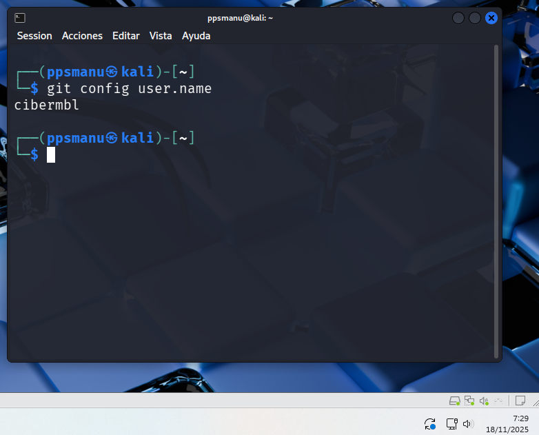
Y efectivamente, tengo las variables declaradas, correctamente.
Instalación de GitHub CLI:
sudo apt update
sudo apt install gh
sudo apt update
sudo apt install gh
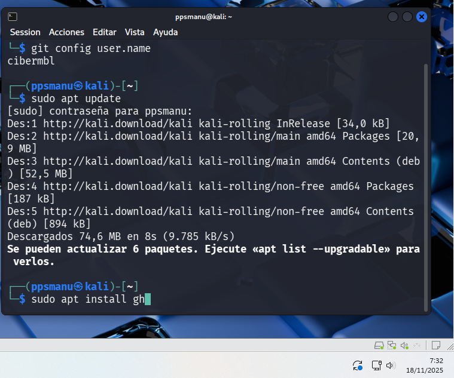

Autenticación en github.com desde GitHub CLI
Una vez instalado, procedo a autenticarme en github.com:
gh auth login
gh auth login
Nos das dos opciones de autenticación, y escojo GitHub.com (con el cursos y enter),

A continuación nos da dos opciones de protocolo de conexión, y dado que ya tengo configurado por ssh, para seguir la política de buenas prácticas en ciberseguridad, la escojo,

Observamos, como reconoce la clave pública, que anteriormente añadí en github, y le damos a enter,
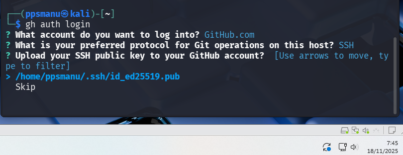
A continuación procedo a logearme mediante la opción --> Login with a web browser,
Nos genera una clave de un solo uso, la cual deberemos de copiar en github.com,
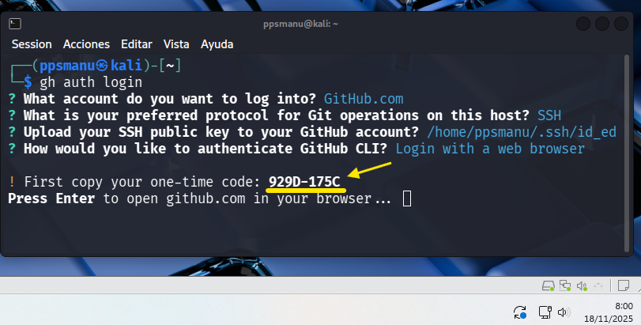
Presiono Enter, y se abre el navegador, y procedemos a entrar con el usuario y contraseña de github, elegimos signed in as (con nuestro usuario de github), y clic en tecla Continue,

Y ya podemos pegar el código anterior:

Clic en Authorize github,

y ya comprobamos como ya está sincronizado con mi ordenador,
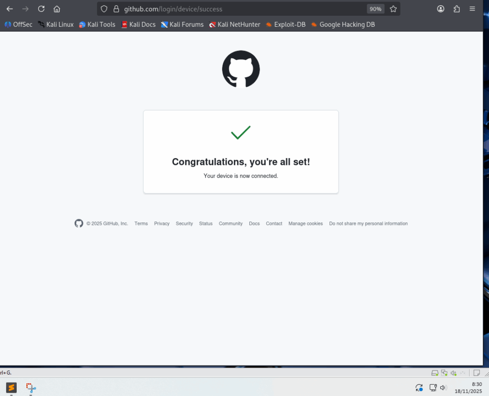
Creación de la estructura del repositorio
A continuación, paso a crear la estructura del repositorio:
Comandos:
#Para crear los directorios
<div></div>
mkdir calculator docs
<div></div>
#Para crear los archivos
<div></div>
touch directorio/archivo
<div></div>
#En el ejemplo:
<div></div>
touch calculator/__init__.py calculator/gui.py docs/index.md mkdocs.yml requiriments.txt
<div></div>
touch docs/git.m docs/gitActions.md docs/gitPages.md docs/docker.md docs/conclusiones.md
#Para crear los directorios
mkdir calculator docs
#Para crear los archivos
touch directorio/archivo
#En el ejemplo:
touch calculator/__init__.py calculator/gui.py docs/index.md mkdocs.yml requiriments.txt
touch docs/git.m docs/gitActions.md docs/gitPages.md docs/docker.md docs/conclusiones.md
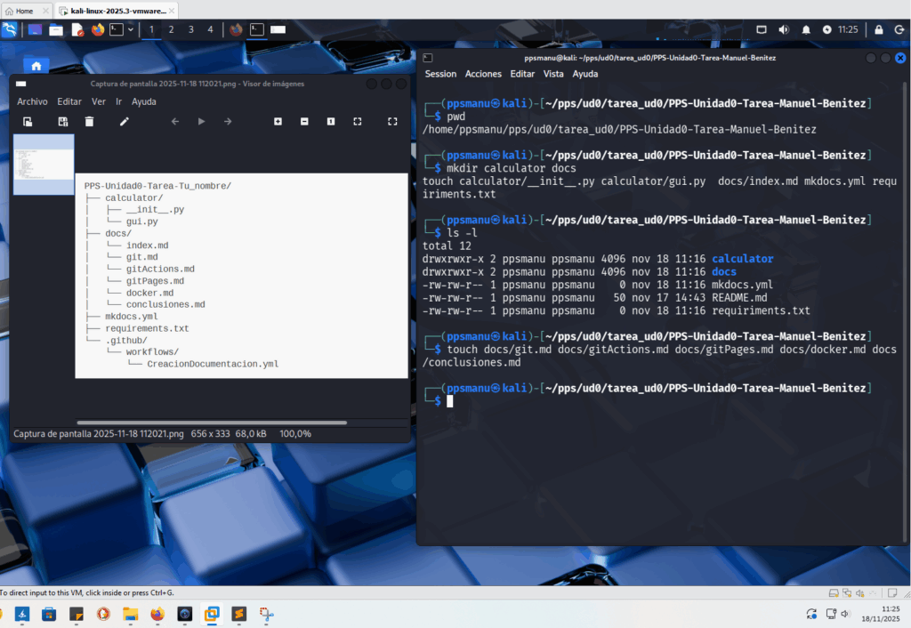
Compruebo como está el estado del proyecto en Github:
git status
git status
y se puede comprobar como los archivos están los archivos sin seguimiento,

Añado todos los directorios y archivos al directorio github,
git add .
git add .
Compruebo el estado, y observamos como aparecen en el area staged (en verde),

Muestro el contenido del directorio en forma de árbol,
tree -a
tree -a

Eliminación del directorio .git (opcional)
Procedo a borrar el directgorio .git,
rm -rf .git*
rm -rf .git*
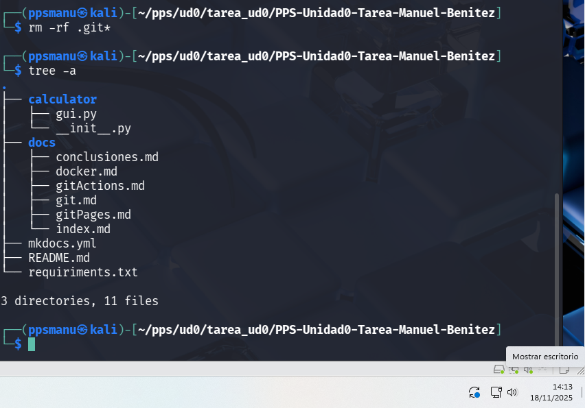
Voy a actualizar el repositorio en remoto, para que no incluya el directorio .git
git init
git add.
git commit -m "Actualización de los archivos después de borrar .git"
git remote add origin git@github.com:cibermbl/PPS-Unidad0-Tarea-Manuel-Benitez.git
git init
git add.
git commit -m "Actualización de los archivos después de borrar .git"
git remote add origin git@github.com:cibermbl/PPS-Unidad0-Tarea-Manuel-Benitez.git

Voy a confirmar todos los cambios para la creación del repositorio, mediante los comandos,
y para subir los cambios,
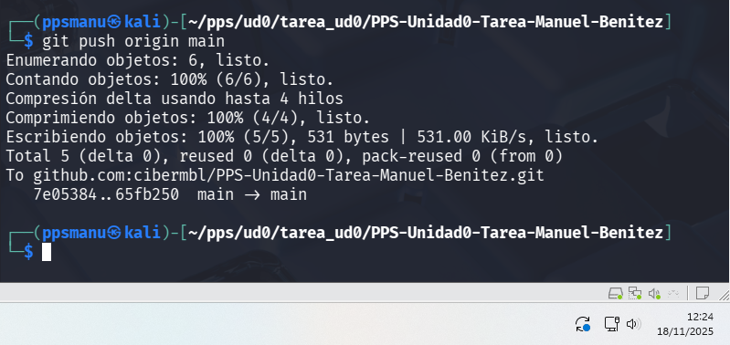
Debido a la eliminación del escritorio .git, me da error por que hay commits que ya no están en el nuevo repositorio modificado,

Para subsanar esto,
# forzamos el git push (eliminando los antiguos commits)
<div></div>
git push origin main -f
# forzamos el git push (eliminando los antiguos commits)
git push origin main -f
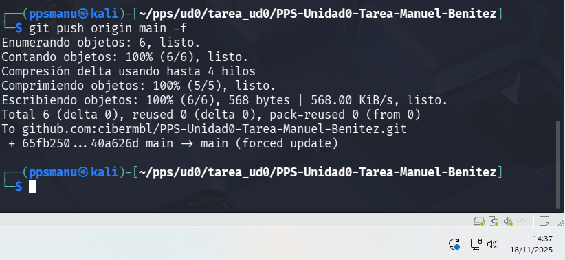
ya está todo subido en remoto a github,
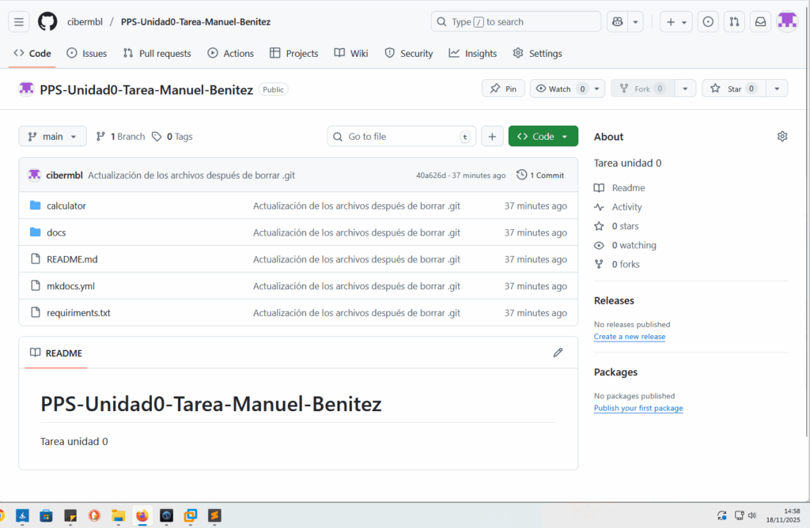

Archivo mkdocs.yml
Por último, voy a crear dar contenido al archivo mkdocs.yml, que es un archivo en lenguaje de marcas .yml, el cual sirve para crear toda la estructura de una página web estática html, a partir de los archivos .md que creamos en la estructura situados en la carpeta docs/,
├── docs/
│ └── index.md
│ └── git.md
│ └── gitActions.md
│ └── gitPages.md
│ └── docker.md
│ └── conclusiones.md
Pues con:
nano mkdocs.yml
nano mkdocs.yml
Escribo lo siguiente:
# -------------------------------------------------------------
# CONFIGURACIÓN GENERAL DEL SITIO
# -------------------------------------------------------------
site_name: Documentación Unidad 0 - Tarea
# Define el título que aparecerá en la barra de navegación y en la etiqueta <title> del navegador.
<div></div>
# -------------------------------------------------------------
# ESTRUCTURA DE NAVEGACIÓN (MENÚ)
# -------------------------------------------------------------
# Define la lista de enlaces y el orden de aparición en el menú de navegación principal.
nav:
# El nombre de la sección en el menú: nombre_archivo.md
- Home: index.md # Enlace a la página principal.
- Git: git.md # Documentación del proceso de creación del repositorio Git.
- GitHub Actions: gitActions.md # Documentación del flujo de trabajo automatizado.
- GitHub Pages: gitPages.md # Documentación del despliegue en GitHub Pages.
- Docker: docker.md # Documentación de la configuración y despliegue con Docker y Nginx.
- Conclusiones: conclusiones.md # Reflexiones y conclusiones finales.
<div></div>
# -------------------------------------------------------------
# DIRECTORIOS
# -------------------------------------------------------------
# Ruta de la carpeta que contiene todos los archivos .md (Markdown) de la documentación.
# MkDocs buscará aquí los archivos listados en 'nav'.
doc_dir: docs
<div></div>
# -------------------------------------------------------------
# TEMA (Opcional, pero común)
# -------------------------------------------------------------
# theme:
# name: 'material' # Si se utiliza el tema Material for MkDocs.
# # highlightjs: true
# # code_fences: true
# -------------------------------------------------------------
# CONFIGURACIÓN GENERAL DEL SITIO
# -------------------------------------------------------------
site_name: Documentación Unidad 0 - Tarea
# Define el título que aparecerá en la barra de navegación y en la etiqueta <title> del navegador.
# -------------------------------------------------------------
# ESTRUCTURA DE NAVEGACIÓN (MENÚ)
# -------------------------------------------------------------
# Define la lista de enlaces y el orden de aparición en el menú de navegación principal.
nav:
# El nombre de la sección en el menú: nombre_archivo.md
- Home: index.md # Enlace a la página principal.
- Git: git.md # Documentación del proceso de creación del repositorio Git.
- GitHub Actions: gitActions.md # Documentación del flujo de trabajo automatizado.
- GitHub Pages: gitPages.md # Documentación del despliegue en GitHub Pages.
- Docker: docker.md # Documentación de la configuración y despliegue con Docker y Nginx.
- Conclusiones: conclusiones.md # Reflexiones y conclusiones finales.
# -------------------------------------------------------------
# DIRECTORIOS
# -------------------------------------------------------------
# Ruta de la carpeta que contiene todos los archivos .md (Markdown) de la documentación.
# MkDocs buscará aquí los archivos listados en 'nav'.
doc_dir: docs
# -------------------------------------------------------------
# TEMA (Opcional, pero común)
# -------------------------------------------------------------
# theme:
# name: 'material' # Si se utiliza el tema Material for MkDocs.
# # highlightjs: true
# # code_fences: true
Como se observa en el el mkdocs.yml, en nav, partir de las .md que están en /docs, crea un menú de navegación. En doc_dir: se define la ruta donde están los .md
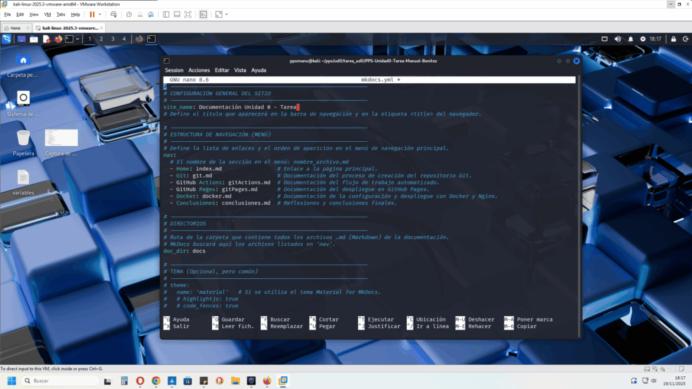
# Guardo el archivo
Ctrl + o
# Guardo el archivo
Ctrl + o